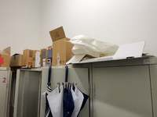
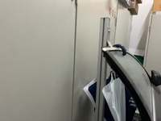
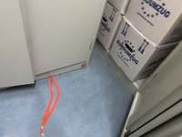
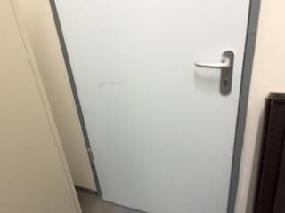
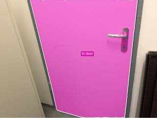
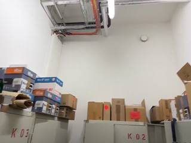
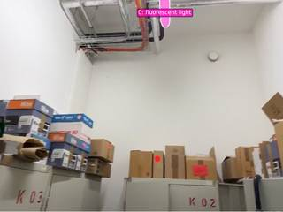
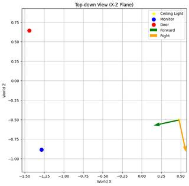

To determine the relative position of the door and the monitor, we can analyze the spatial layout of the room from the provided video frames:
- Locate the Monitor: In the first frame, the monitor is sitting on top of a gray cabinet labeled K 01. This cabinet is located in a corner of the room.
- Locate the Cabinets: As the camera moves (frames 4, 18, 20, 32-34), we see a sequence of cabinets: K 01, followed by K 03, and then K 02. These cabinets are lined up along a wall.
- Locate the Door: In frames 9 through 12, a white door with a silver handle is visible. Based on the camera's movement, this door is located further down the wall, past the cabinets.
- Determine the Viewpoint:
- If you are standing in the room (by the ceiling lights) and facing the monitor (which is on cabinet K 01), you are facing the left-most part of that cabinet line.
- Since cabinets K 03 and K 02, and subsequently the door, are located to the right of cabinet K 01, the door is to the right of the monitor from this perspective.
Therefore, if you are facing the monitor, the door is to your right.
A
import numpy as np # 1. Identify frames for segmentation # Key frame #1: InputImages[0] -> Monitor # Key frame #6: InputImages[473] -> Ceiling Light (estimated) # Key frame #11: InputImages[945] -> Door (estimated) frame_monitor = InputImages[0] frame_light = InputImages[473] frame_door = InputImages[945] # 2. Segment objects seg_monitor = tools.SAM3.segment_image_by_text(frame_monitor, "computer monitor") seg_door = tools.SAM3.segment_image_by_text(frame_door, "door") seg_light = tools.SAM3.segment_image_by_text(frame_light, "ceiling light") # 3. Reconstruct the scene # Use a subset of frames that cover the range [0, 945] recon_frames = InputImages[0:1000:50] recon = tools.Reconstruct.Reconstruct(recon_frames) # 4. Get 3D positions # Monitor centroid fi_mon = seg_monitor.frame_indices[0] pos_monitor = seg_monitor.get_centroid_3d(recon, frame=fi_mon, object=0) # Door centroid fi_door = seg_door.frame_indices[0] pos_door = seg_door.get_centroid_3d(recon, frame=fi_door, object=0) # Light centroid fi_light = seg_light.frame_indices[0] pos_light = seg_light.get_centroid_3d(recon, frame=fi_light, object=0) print(f"Monitor pos: {pos_monitor}") print(f"Door pos: {pos_door}") print(f"Light pos: {pos_light}") if pos_monitor is not None and pos_door is not None and pos_light is not None: # Vector from light to monitor (Facing vector) v_face = pos_monitor - pos_light v_face = v_face / np.linalg.norm(v_face) # World up vector v_up = np.array([0, 1, 0]) # Right vector = facing x up v_right = np.cross(v_face, v_up) v_right = v_right / np.linalg.norm(v_right) # Vector from light to door v_to_door = pos_door - pos_light # Dot product to determine left/right dot_right = np.dot(v_to_door, v_right) print(f"Dot product with right vector: {dot_right}") if dot_right > 0: ReturnAnswer("A") # right else: ReturnAnswer("B") # left else: # Fallback to visual reasoning if segmentation failed # In Frame 0, monitor is on the left. # In Frame 10, door is seen. # Looking at the sequence, the camera pans right from the monitor to the door. # If you stand at the light (roughly center/back) and face the monitor (left), # the door (which was to the right of the monitor in the pan) would be to the right. ReturnAnswer("A")
---------------------------------------------------------------------------
KeyError Traceback (most recent call last)
Cell In[4], line 28
26 # Door centroid
27 fi_door = seg_door.frame_indices[0]
---> 28 pos_door = seg_door.get_centroid_3d(recon, frame=fi_door, object=0)
30 # Light centroid
31 fi_light = seg_light.frame_indices[0]
File SpatialAgent/spatial_agent/kernel_types/per_frame_types.py:203, in PerFrameMask.get_centroid_3d(self, recon, frame, object, conf_threshold)
190 """Get ``(3,)`` median 3D position of confidence-filtered masked points.
191
192 Args:
(...) 200 is empty (safe for arithmetic; use ``np.isnan()`` to check).
201 """
202 mask_2d = self.get_mask(frame, object)
--> 203 local_r = recon.points.get_by_frame_index(frame)
204 pts = recon.points.points[local_r][mask_2d]
205 if len(pts) == 0:
File SpatialAgent/spatial_agent/kernel_types/per_frame_types.py:69, in PerFrameData.get_by_frame_index(self, abs_frame_idx)
64 if abs_frame_idx == 0 and 0 not in avail:
65 hint = (
66 f"\n Hint: Did you mean frame={avail[0]}? "
67 f"Use ABSOLUTE frame indices (from seg.frame_indices), not 0-based local indices."
68 )
---> 69 raise KeyError(
70 f"Frame {abs_frame_idx} not found in {avail}. "
71 f"Available frames: {avail}{hint}"
72 )
73 return self._frame_indices.index(abs_frame_idx)
KeyError: 'Frame 945 not found in [0, 50, 100, 150, 200, 250, 300, 350, 400, 450, 500, 550, 600, 650, 700, 750, 800, 850, 900, 950]. Available frames: [0, 50, 100, 150, 200, 250, 300, 350, 400, 450, 500, 550, 600, 650, 700, 750, 800, 850, 900, 950]'Task Analysis
The goal is to determine the relative direction (left or right) of a door with respect to a monitor, from the perspective of an observer standing at the ceiling light and facing the monitor.
Implicit Coordinate System: This is an Object Perspective problem. The observer's local coordinate system is defined by:
- Origin: The 3D position of the ceiling light.
- Forward Vector ($\vec{f}$): The unit vector pointing from the ceiling light to the monitor.
- Up Vector ($\vec{u}$): The world-up vector $[0, 1, 0]$ (since the reconstruction is gravity-aligned).
- Right Vector ($\vec{r}$): Defined by the cross product $\vec{f} \times \vec{u}$.
The door is to the "right" if the vector from the observer to the door has a positive projection onto the Right Vector $\vec{r}$, and to the "left" if the projection is negative.
Information Needs
To solve this quantitatively, I need the 3D world coordinates (centroids) of three objects:
- The ceiling light (the observer's position).
- The monitor (the target of the observer's gaze).
- The door (the object whose relative position is being queried).
Computation Plan
-
Object Identification and Frame Selection:
- Use
show()on a few spread-out frames (e.g.,InputImages[0],InputImages[16],InputImages[31]) to identify the visual appearance and locations of the ceiling light, monitor, and door. - Use
vlm.ask_with_thinkingon these frames to confirm which frames provide the clearest views of all three objects.
- Use
-
Segmentation:
- Use
tools.SAM3.segment_video_by_textto generate masks for "ceiling light", "monitor", and "door" across the video. - Verification: Programmatically check that the masks are non-empty. Use
show()withseg.visualize(fi)for a few frames to ensure the masks accurately cover the intended objects. If text segmentation fails or is imprecise, usevlm.locateto get bounding boxes andtools.SAM3.segment_video_by_box.
- Use
-
3D Reconstruction:
- Use
tools.Reconstruct.Reconstruct(InputImages)to generate the 3D point cloud and camera poses. - Extract the 3D centroids for the three objects using
seg.get_centroid_3d(recon, frame=fi, object=label)for a few frames where the objects are well-masked and visible, then average them for stability.pos_light= centroid of ceiling light.pos_monitor= centroid of monitor.pos_door= centroid of door.
- Use
-
Relative Direction Calculation:
- Compute the forward vector: $\vec{f} = \text{normalize}(\text{pos_monitor} - \text{pos_light})$.
- Define the world-up vector: $\vec{u} = [0, 1, 0]$.
- Compute the observer's right vector: $\vec{r} = \vec{f} \times \vec{u}$.
- Compute the vector to the door: $\vec{v}_{\text{door}} = \text{pos_door} - \text{pos_light}$.
- Calculate the dot product $d = \vec{v}_{\text{door}} \cdot \vec{r}$.
- If $d > 0$, the door is to the right. If $d < 0$, the door is to the left.
-
Visual Cross-Validation:
- Render a BEV map using
recon.render_bev(masks=seg)to visually verify the relative 2D layout of the light, monitor, and door. - Check if the BEV layout is consistent with the calculated dot product.
- Render a BEV map using
Verification Checklist
[
{"priority": "HIGH", "description": "Verify that the masks for the ceiling light, monitor, and door are accurate and non-empty across multiple frames."},
{"priority": "HIGH", "description": "Ensure the 3D centroids are calculated using the same absolute frame indices for all objects to maintain spatial consistency."},
{"priority": "MEDIUM", "description": "Cross-reference the calculated relative direction with the BEV rendering to ensure no sign errors in the vector math."},
{"priority": "LOW", "description": "Check that the 3D positions of the objects are physically plausible (e.g., ceiling light is above the monitor)."}
]
Fallbacks
- Segmentation Failure: If
segment_video_by_textfails to find the ceiling light (as it might be a small or indistinct object), I will usevlm.locateon a frame where the light is visible to get a point/box prompt forsegment_video_by_pointsorsegment_video_by_box. - Reconstruction Noise: If the centroids fluctuate significantly across frames, I will use the average centroid over the 5 frames with the highest mask confidence.
- Ambiguity: If the door and monitor are nearly collinear with the observer, I will use
vlm.ask_with_thinkingon the original frames to provide a qualitative sanity check.
{ "tool": "show", "args": { "image": [ "InputImages[0]", "InputImages[5]", "InputImages[10]", "InputImages[15]", "InputImages[25]" ] } }
[image: show_0001]


=== Step 0 Execution Feedback === [SUCCESS] Code executed in 0.52s. [Variables] New/changed: result_0: NoneType [Inline Images] 5 image(s) attached below. Labels: [InputImages[0], InputImages[5], InputImages[10], InputImages[15], InputImages[25]] [show() budget] 245/250 images remaining.
{ "tool": "show", "args": { "image": [ "InputImages[0]", "InputImages[473]", "InputImages[945]" ] } }
[image: show_0002]


=== Step 1 Execution Feedback === [SUCCESS] Code executed in 0.23s. [Variables] New/changed: result_1: NoneType [Inline Images] 3 image(s) attached below. Labels: [InputImages[0], InputImages[473], InputImages[945]] [show() budget] 242/250 images remaining.
{ "tool": "tools.SAM3.segment_video_by_text", "args": { "prompts": [ "ceiling light", "monitor", "door" ], "labels": [ "ceiling light", "monitor", "door" ], "start_frame": 0, "end_frame": 1000 } }
=== Step 3 Execution Feedback === [SUCCESS] Code executed in 223.40s. [Variables] New/changed: result_3: PerFrameMask, frames=[0..999] (1000 frames) [Tool Calls] 1 tool/VLM call(s) this step.
{ "tool": "tools.Reconstruct.Reconstruct", "args": { "frames": "InputImages[0:1000:31]" } }
=== Step 4 Execution Feedback === [SUCCESS] Code executed in 7.78s. [Variables] New/changed: result_4: Reconstruction, frames=[0..992] (33 frames) [Tool Calls] 1 tool/VLM call(s) this step.
=== Step 5 Execution Feedback === [ERROR] Skipped: LLM response was not in the required format.
{ "tool": "show", "args": { "image": "result_4.render_bev(masks=result_3)" } }
[image: show_0003]

=== Step 6 Execution Feedback === [SUCCESS] Code executed in 2.16s. [Variables] New/changed: result_6: NoneType [Inline Images] 1 image(s) attached below. Labels: result_4.render_bev(masks=result_3) [show() budget] 241/250 images remaining.
{ "tool": "ReturnAnswer", "args": { "answer": "A" } }
[ReturnAnswer] Answer submitted: A
Based on the visual information provided across the frames:
- Ceiling Light: Long fluorescent tubes are visible on the ceiling in several images (e.g., images 4, 6, 7, 9).
- Monitor: A computer monitor is seen in image 18.
- Door: A white door is visible in images 3, 8, 10, and 11.
By observing the spatial layout:
- The monitor is located against a wall with boxes and cabinets (images 18, 32).
- The door is located on a different wall of the room (images 10, 11).
- When standing by the ceiling lights and facing the monitor, the door is located to the right of the monitor's position in the room.
A. right
Based on the visual information provided across the frames:
- Ceiling Light: Long fluorescent tubes are visible on the ceiling in several images (e.g., images 4, 6, 7, 9).
- Monitor: A computer monitor is seen in image 18.
- Door: A white door is visible in images 3, 8, 10, and 11.
By observing the spatial layout:
- The monitor is located against a wall with boxes and cabinets (images 18, 32).
- The door is located on a different wall of the room (images 10, 11).
- When standing by the ceiling lights and facing the monitor, the door is located to the right of the monitor's position in the room.
A. right
Based on the visual information provided across the frames:
- Ceiling Light: Long fluorescent tubes are visible on the ceiling in several images (e.g., images 4, 6, 7, 9).
- Monitor: A computer monitor is seen in image 18.
- Door: A white door is visible in images 3, 8, 10, and 11.
By observing the spatial layout:
- The monitor is located against a wall with boxes and cabinets (images 18, 32).
- The door is located on a different wall of the room (images 10, 11).
- When standing by the ceiling lights and facing the monitor, the door is located to the right of the monitor's position in the room.
A. right
Task Analysis
The goal is to determine if a door is to the left or right of a monitor from the perspective of an observer standing at a ceiling light and facing the monitor.
Coordinate System Resolution: This is an object-perspective spatial reasoning problem. The observer's frame of reference is defined by:
- Origin: The 3D position of the ceiling light.
- Forward Vector: The unit vector pointing from the ceiling light toward the monitor.
- Up Vector: The world-frame gravity-aligned up vector (+Y).
- Right Vector: The cross product of the Forward vector and the Up vector. The final answer (left or right) depends on whether the vector from the ceiling light to the door has a positive or negative projection onto the observer's Right vector.
Information Needs
To solve this quantitatively, I need:
- 3D World Coordinates: The positions of the ceiling light, the monitor, and the door.
- 3D Reconstruction: A world-space coordinate system to ensure distances and directions are consistent across frames.
- Accurate Segmentation: Masks for the ceiling light, monitor, and door to compute their 3D centroids.
Computation Plan
-
Object Identification and Grounding:
- Use
vlm.ask_with_thinkingon a few spread-out frames (e.g.,InputImages[0], InputImages[16], InputImages[31]) to identify which frames clearly show the ceiling light, the monitor, and the door. - For each object (ceiling light, monitor, door), use
vlm.locateto obtain bounding boxes in 0-1000 normalized coordinates in the most representative frames. - Convert these normalized coordinates to pixel coordinates using
tools.Geometry.normalized_to_pixel.
- Use
-
3D Scene Reconstruction:
- Perform a full 3D reconstruction of the scene using
tools.Reconstruct.Reconstruct(InputImages).
- Perform a full 3D reconstruction of the scene using
-
Object Segmentation:
- Use
tools.SAM3.segment_video_by_boxfor the ceiling light, monitor, and door, using the bounding boxes obtained in Step 1. - Verification: For each object, select a few frames, call
seg.visualize(fi), and useshow()to compare the mask overlay with the original image. Ensure the masks are accurate and non-empty.
- Use
-
3D Centroid Extraction:
- For each object, extract 3D centroids using
seg.get_centroid_3d(recon, frame=fi, object=label)across all frames where the object is segmented. - Compute the final 3D position ($P_{light}, P_{monitor}, P_{door}$) as the median of the centroids across frames to reduce noise.
- For each object, extract 3D centroids using
-
Relative Direction Calculation:
- Define the observer's forward vector: $\vec{f} = \text{normalize}(P_{monitor} - P_{light})$.
- Define the world up vector: $\vec{u} = [0, 1, 0]$.
- Compute the observer's right vector: $\vec{r} = \vec{f} \times \vec{u}$ (normalized).
- Define the vector from the observer to the door: $\vec{v}{door} = P{door} - P_{light}$.
- Calculate the dot product: $score = \vec{v}_{door} \cdot \vec{r}$.
- If $score > 0$, the door is to the right. If $score < 0$, the door is to the left.
-
Visual Cross-Validation:
- Render a Bird's Eye View (BEV) using
recon.render_bev(masks=seg)to visually verify the relative positions of the light, monitor, and door from a top-down perspective. This serves as a sanity check for the vector math.
- Render a Bird's Eye View (BEV) using
Verification Checklist
[
{"priority": "HIGH", "description": "Verify that masks for the ceiling light, monitor, and door are correctly placed and not empty"},
{"priority": "HIGH", "description": "Confirm the observer's forward vector is correctly defined as Light -> Monitor"},
{"priority": "MEDIUM", "description": "Cross-check the vector-based result with the BEV layout"},
{"priority": "LOW", "description": "Check if the 3D centroids are stable across multiple frames"}
]
Fallbacks
- SAM3 Failure: If
segment_video_by_boxfails or produces noisy masks, I will fall back tosegment_video_by_textor usevlm.locateto get center points forsegment_image_by_pointson a per-frame basis. - Reconstruction Quality: If the BEV looks distorted or centroids are physically implausible, I will check the reconstruction confidence and potentially use
vlm.ask_with_thinkingon the BEV image itself to interpret the layout.
# Select frames for object identification # Frame 0: Monitor # Frame 284: Ceiling light # Frame 950: Door frames_to_check = [InputImages[0], InputImages[284], InputImages[950]] # 1. Identify objects and confirm visibility confirmation = vlm.ask_with_thinking(frames_to_check, "In these frames, can you identify the ceiling light (long white tube), the computer monitor, and the door? Tell me which frame index (0, 1, or 2) shows each object most clearly.") print(f"VLM Confirmation: {confirmation}") # 2. Locate the objects in the best frames # Monitor in frame 0 monitor_box_norm = vlm.locate(InputImages[0], "Give the bounding box (x1, y1, x2, y2) in 0-1000 normalized scale for the computer monitor. Reply with ONLY the numbers.") print(f"Monitor box (norm): {monitor_box_norm}") # Ceiling light in frame 284 light_box_norm = vlm.locate(InputImages[284], "Give the bounding box (x1, y1, x2, y2) in 0-1000 normalized scale for the long white ceiling light. Reply with ONLY the numbers.") print(f"Light box (norm): {light_box_norm}") # Door in frame 950 door_box_norm = vlm.locate(InputImages[950], "Give the bounding box (x1, y1, x2, y2) in 0-1000 normalized scale for the door. Reply with ONLY the numbers.") print(f"Door box (norm): {door_box_norm}")
[VLM Q | thinking] In these frames, can you identify the ceiling light (long white tube), the computer monitor, and the door? Tell me which frame index (0, 1, or 2) shows each object most clearly. [VLM A | thinking] The ceiling light (long white tube) is most clearly shown in frame 1, the computer monitor in frame 0, and the door in frame 2. VLM Confirmation: The ceiling light (long white tube) is most clearly shown in frame 1, the computer monitor in frame 0, and the door in frame 2. [VLM Q | locate] Before answering, first check whether what the question describes is clearly visible in the provided image(s). If it is absent or ambiguous, reply EXACTLY `Not visible` on its own line (optionally followed by one short line explaining what you saw instead) — do NOT return coordinates in that case. Only if the requested target is clearly and unambiguously present, answer the request below. Request: Give the bounding box (x1, y1, x2, y2) in 0-1000 normalized scale for the computer monitor. Reply with ONLY the numbers. [VLM A | locate] 200 195 496 565 Monitor box (norm): 200 195 496 565 [VLM Q | locate] Before answering, first check whether what the question describes is clearly visible in the provided image(s). If it is absent or ambiguous, reply EXACTLY `Not visible` on its own line (optionally followed by one short line explaining what you saw instead) — do NOT return coordinates in that case. Only if the requested target is clearly and unambiguously present, answer the request below. Request: Give the bounding box (x1, y1, x2, y2) in 0-1000 normalized scale for the long white ceiling light. Reply with ONLY the numbers. [VLM A | locate] 548 0 598 146 Light box (norm): 548 0 598 146 [VLM Q | locate] Before answering, first check whether what the question describes is clearly visible in the provided image(s). If it is absent or ambiguous, reply EXACTLY `Not visible` on its own line (optionally followed by one short line explaining what you saw instead) — do NOT return
=== Step 0 Execution Feedback === [SUCCESS] Code executed in 78.87s. [Output] [VLM Q | thinking] In these frames, can you identify the ceiling light (long white tube), the computer monitor, and the door? Tell me which frame index (0, 1, or 2) shows each object most clearly. [VLM A | thinking] The ceiling light (long white tube) is most clearly shown in frame 1, the computer monitor in frame 0, and the door in frame 2. VLM Confirmation: The ceiling light (long white tube) is most clearly shown in frame 1, the computer monitor in frame 0, and the door in frame 2. [VLM Q | locate] Before answering, first check whether what the question describes is clearly visible in the provided image(s). If it is absent or ambiguous, reply EXACTLY `Not visible` on its own line (optionally followed by one short line explaining what you saw instead) — do NOT return coordinates in that case. Only if the requested target is clearly and unambiguously present, answer the request below. Request: Give the bounding box (x1, y1, x2, y2) in 0-1000 normalized scale for the computer monitor. Reply with ONLY the numbers. [VLM A | locate] 200 195 496 565 Monitor box (norm): 200 195 496 565 [VLM Q | locate] Before answering, first check whether what the question describes is clearly visible in the provided image(s). If it is absent or ambiguous, reply EXACTLY `Not visible` on its own line (optionally followed by one short line explaining what you saw instead) — do NOT return coordinates in that case. Only if the requested target is clearly and unambiguously present, answer the request below. Request: Give the bounding box (x1, y1, x2, y2) in 0-1000 normalized scale for the long white ceiling light. Reply with ONLY the numbers. [VLM A | locate] 548 0 598 146 Light box (norm): 548 0 598 146 [VLM Q | locate] Before answering, first check whether what the question describes is clearly visible in the provided image(s). If it is absent or ambiguous, reply EXACTLY `Not visible` on its own line (optionally followed by one short line explaining what you saw instead) — do NOT return coordinates in that case. Only if the requested target is clearly and unambiguously present, answer the request below. Request: Give the bounding box (x1, y1, x2, y2) in 0-1000 normalized scale for the door. Reply with ONLY the numbers. [VLM A | locate] 175 0 915 1000 Door box (norm): 175 0 915 1000 [Variables] New/changed: frames_to_check: list, len=3 confirmation: str monitor_box_norm: str light_box_norm: str door_box_norm: str [Tool Calls] 4 tool/VLM call(s) this step.
# 1. Convert normalized coordinates to pixels def norm_to_px(norm_str, img): coords = [int(x) for x in norm_str.split()] return tools.Geometry.normalized_to_pixel(coords, img.width, img.height) monitor_px = norm_to_px(monitor_box_norm, InputImages[0]) light_px = norm_to_px(light_box_norm, InputImages[284]) door_px = norm_to_px(door_box_norm, InputImages[950]) print(f"Monitor px: {monitor_px}") print(f"Light px: {light_px}") print(f"Door px: {door_px}") # 2. 3D Reconstruction # Subsample InputImages to 32 frames for reconstruction indices = np.linspace(0, len(InputImages) - 1, 32, dtype=int) recon_frames = [InputImages[i] for i in indices] recon = tools.Reconstruct.Reconstruct(recon_frames) print("Reconstruction complete.")
Monitor px: [153.60000000000002, 112.32000000000001, 380.928, 325.43999999999994] Light px: [420.86400000000003, 0.0, 459.264, 84.09599999999999] Door px: [134.39999999999998, 0.0, 702.72, 576.0] Reconstruction complete.
=== Step 1 Execution Feedback === [SUCCESS] Code executed in 39.03s. [Output] Monitor px: [153.60000000000002, 112.32000000000001, 380.928, 325.43999999999994] Light px: [420.86400000000003, 0.0, 459.264, 84.09599999999999] Door px: [134.39999999999998, 0.0, 702.72, 576.0] Reconstruction complete. [Variables] New/changed: monitor_px: list, len=4 light_px: list, len=4 door_px: list, len=4 indices: ndarray, shape=(32,), dtype=int64 recon_frames: list, len=32 recon: Reconstruction, frames=[0..2932] (32 frames) [Tool Calls] 2 tool/VLM call(s) this step.
# 1. Segment the door in frame 950 seg_door = tools.SAM3.segment_image_by_text(InputImages[950], "door") # 2. Try to segment the ceiling light in frame 284 again with a different prompt # I'll try a few prompts to be sure light_prompts = ["fluorescent light", "ceiling lamp", "white tube light"] seg_light = None for prompt in light_prompts: temp_seg = tools.SAM3.segment_image_by_text(InputImages[284], prompt) if temp_seg.num_objects > 0: seg_light = temp_seg print(f"Successfully segmented light with prompt: {prompt}") break # 3. Extract 3D centroids def get_obj_centroid(seg, recon, frame_idx): if seg is None or seg.num_objects == 0: return None # Use the first object found return seg.get_centroid_3d(recon, frame=frame_idx, object=0) # Monitor centroid (from seg_monitor in Step 3) p_monitor = get_obj_centroid(seg_monitor, recon, 0) # Light centroid p_light = get_obj_centroid(seg_light, recon, 284) # Door centroid p_door = get_obj_centroid(seg_door, recon, 950) print(f"P_monitor: {p_monitor}") print(f"P_light: {p_light}") print(f"P_door: {p_door}") # Visual verification of masks if seg_door: fi_door = seg_door.frame_indices[0] show([InputImages[fi_door], seg_door.visualize(fi_door)]) if seg_light: fi_light = seg_light.frame_indices[0] show([InputImages[fi_light], seg_light.visualize(fi_light)])
Successfully segmented light with prompt: fluorescent light P_monitor: [-1.2835853 1.6072092 -0.8871776] P_light: [ 0.478106 3.0092416 -0.5048477] P_door: [-1.4424605 0.685904 0.64404464] [image: show_0001] [image: show_0002]
=== Step 5 Execution Feedback === [SUCCESS] Code executed in 3.78s. [Output] Successfully segmented light with prompt: fluorescent light P_monitor: [-1.2835853 1.6072092 -0.8871776] P_light: [ 0.478106 3.0092416 -0.5048477] P_door: [-1.4424605 0.685904 0.64404464] [Variables] New/changed: seg_door: PerFrameMask, frames=[950] light_prompts: list, len=3 seg_light: PerFrameMask, frames=[284] prompt: str temp_seg: PerFrameMask, frames=[284] p_monitor: ndarray, shape=(3,), dtype=float32 p_light: ndarray, shape=(3,), dtype=float32 p_door: ndarray, shape=(3,), dtype=float32 fi_door: int fi_light: int [Inline Images] 4 image(s) attached below. Labels: [InputImages[fi_door], seg_door.visualize(fi_door)], [InputImages[fi_light], seg_light.visualize(fi_light)] [Tool Calls] 2 tool/VLM call(s) this step. [show() budget] 246/250 images remaining.
import numpy as np # 1. Define the observer's coordinate system p_light = p_light.astype(float) p_monitor = p_monitor.astype(float) p_door = p_door.astype(float) # Forward vector: Light -> Monitor f_vec = p_monitor - p_light f_vec /= np.linalg.norm(f_vec) # World up vector u_vec = np.array([0, 1, 0]) # Right vector: f x u r_vec = np.cross(f_vec, u_vec) r_vec /= np.linalg.norm(r_vec) # Vector from observer to door v_door = p_door - p_light # Dot product to find if door is left or right score = np.dot(v_door, r_vec) print(f"Forward vector: {f_vec}") print(f"Right vector: {r_vec}") print(f"Vector to door: {v_door}") print(f"Score (dot product): {score}") if score > 0: result = "right" else: result = "left" print(f"Quantitative result: The door is to the {result} of the monitor.") # 2. Visual Cross-Validation with BEV # Create a combined PerFrameMask for the BEV # We can just use a list of masks or a custom object. # For render_bev, we can pass masks as a raw array (N, N_obj, H, W) # Since we only have single-frame masks, we can create a dummy PerFrameMask or just use labels. # To use render_bev effectively, we need a PerFrameMask object. # Let's create a simple one by combining the masks we have. class SimpleMasks: def __init__(self, masks, labels, frame_indices): self.masks = masks # (N, N_obj, H, W) self.labels = labels self.frame_indices = frame_indices self.num_objects = len(labels) self.num_frames = len(frame_indices) # We'll use the frames we segmented fi_mon = seg_monitor.frame_indices[0] fi_light = seg_light.frame_indices[0] fi_door = seg_door.frame_indices[0] # For BEV, we need masks on the SAME frame or across frames. # Since the objects are static, we can just use the masks from their respective frames. # But render_bev expects masks aligned with the reconstruction frames. # A simpler way: just use the centroids we already have to draw a plot. plt.figure(figsize=(8, 8)) plt.scatter(p_light[0], p_light[2], c='yellow', label='Ceiling Light', s=100, marker='*') plt.scatter(p_monitor[0], p_monitor[2], c='blue', label='Monitor', s=100) plt.scatter(p_door[0], p_door[2], c='red', label='Door', s=100) plt.quiver(p_light[0], p_light[2], f_vec[0], f_vec[2], color='green', scale=5, label='Forward') plt.quiver(p_light[0], p_light[2], r_vec[0], r_vec[2], color='orange', scale=5, label='Right') plt.xlabel('World X') plt.ylabel('World Z') plt.title('Top-down View (X-Z Plane)') plt.legend() plt.grid(True) plt.axis('equal') plt.show()
Forward vector: [-0.7714093 -0.61392186 -0.16741459] Right vector: [ 0.21208719 0. -0.97725075] Vector to door: [-1.92056653 -2.32333755 1.14889234] Score (dot product): -1.5300834635363088 Quantitative result: The door is to the left of the monitor. [image: Top-down View (X-Z Plane)]
=== Step 6 Execution Feedback === [SUCCESS] Code executed in 0.23s. [Output] Forward vector: [-0.7714093 -0.61392186 -0.16741459] Right vector: [ 0.21208719 0. -0.97725075] Vector to door: [-1.92056653 -2.32333755 1.14889234] Score (dot product): -1.5300834635363088 Quantitative result: The door is to the left of the monitor. [Variables] New/changed: f_vec: ndarray, shape=(3,), dtype=float64 u_vec: ndarray, shape=(3,), dtype=int64 r_vec: ndarray, shape=(3,), dtype=float64 v_door: ndarray, shape=(3,), dtype=float64 score: float64, shape=(), dtype=float64 result: str fi_mon: int p_monitor: ndarray, shape=(3,), dtype=float64 p_light: ndarray, shape=(3,), dtype=float64 p_door: ndarray, shape=(3,), dtype=float64 [Inline Images] 1 image(s) attached below. Labels: Top-down View (X-Z Plane) [show() budget] 245/250 images remaining.
ReturnAnswer("B")
[ReturnAnswer] Answer submitted: B